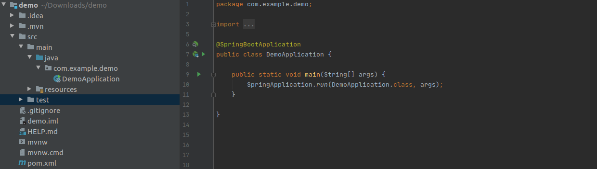

Spring Boot - mvnw or mvnw.cmd. What the Hell Is That?
Spring Boot is an extension of the spring framework (frameworkless framework) that created focus on small, light-weight, stand-alone application and productivity. Spring boot has eliminated boilerplate code with auto-configuration and no requirement for XML configuration. You don't care about how to config any dependencies to your project, Spring boot will enable and manage it for you.
Spring provided several ways to create starter project follow:
- - From the web application at http://start.spring.io
- - From the command line using the command curl
- - From the command line using the Spring Boot command-line interface
- - When creating a new project with Spring Tool Suite
- - When creating a new project with IntelliJ IDEA
- - When creating a new project with NetBeans
When you create a spring boot project for building your magical application, Spring generated one package for you. This project package is just a java project directory that comes along with a main java class entry point and other dev dependencies. Spring project structure following below figure:

In this article, I don't explain a whole of structure. I just talk about important build tools that spring concerns and are embedded in spring boot projects. I think some people ignored it. they try to install into their environment.
If they have repeated installation, it is not a mistake. With spring, they opinionated a lot of build tools such as Maven, Gradle, Groovy,...etc. Because spring boot is stand-alone, so embedded everything that needs both development and deployment.
et back and see in above picture, You will see mvnw and mvnw.cmd. (If you generate spring boot starter choosing gradle, you will see gradlew and gradlew.bat).
what are these files? When we use it?
Even though your local machine doen't install maven or gradle tool, You can still run your spring boot project without obstacles. Spring does not only embed tomcat, it included a build tool also. These wrapper scripts can build your project in any environments (Linux, or Windows) both local and cloud server. You don't worry about running the environment, you just focus on your solution and codebase.
In order to execute this script to build your project, you will open terminal at root project and type the command start with ./mavenw package for linux or ./mavenw.cmd package for window.
This wrapper script is useful because it keeps your machine as to be free and clean. That is spring done!!!